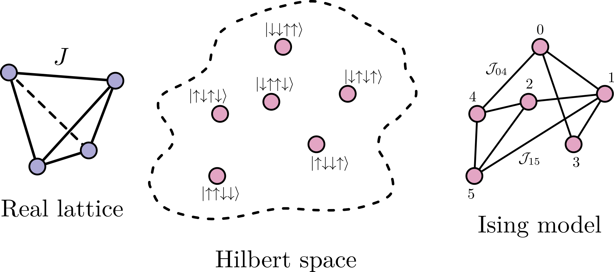
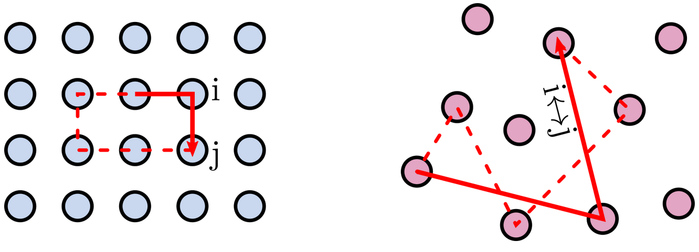
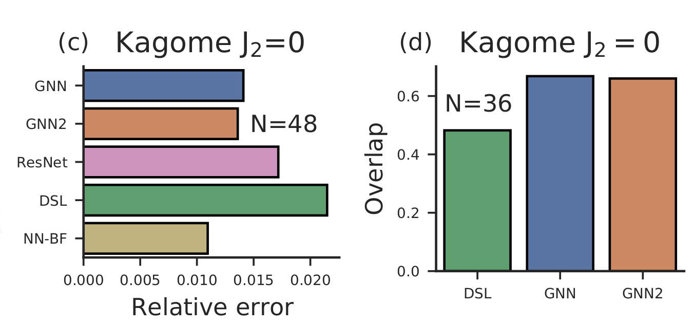
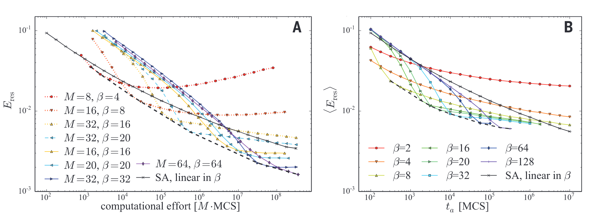
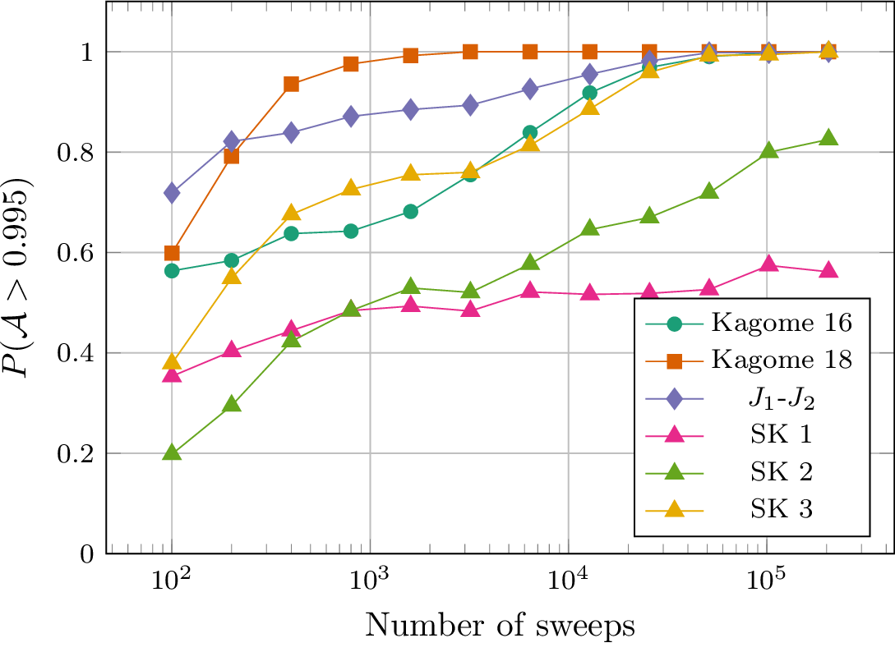
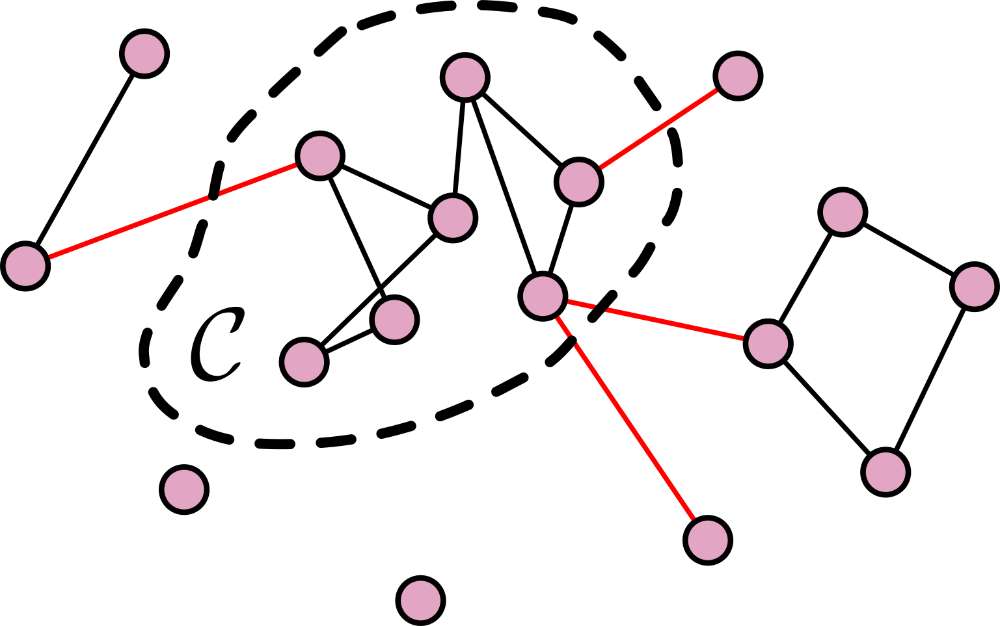
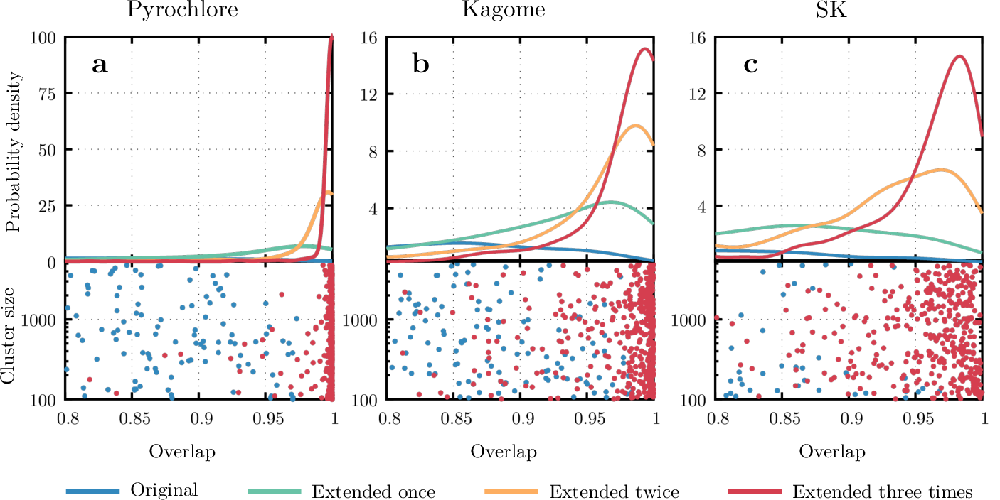
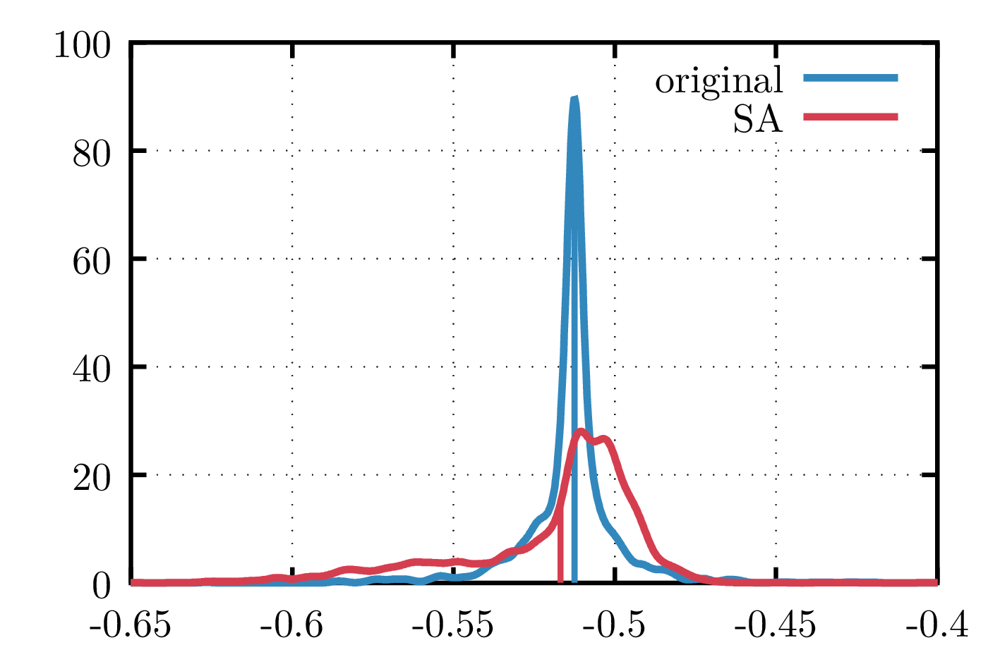

layout: true background-image: url(assets/img/ru_logo_a4_imm_eng_1.png) background-position: 85% 98% background-size: 25% --- class: center, middle # Unveiling ground state sign structures of frustrated quantum systems via non-glassy Ising models .big[ Tom Westerhout<br> 22 March 2022] *In collaboration with Andrey Bagrov & Mikhail I. Katsnelson* --- # Phases/signs in quantum mechanics - There is no quantum mechanics without phases<br> *(Chen, M. C. et al. (2022) Physical Review Letters, 128(4), 040403)* - There is no strong entanglement without phases<br> *(Grover, T. et al. (2015) Physical Review A, 92(4), 042308)* -- .center[**➜ we need signs**] -- ### NQS-specific - Neural networks do not generalize the sign structure too well<br> (*Westerhout, T. et al. (2020) Nature communications, 11(1), 1-8*) - Networks get trapped in Marshal Sign Rule-like states<br> (*Szabó, A. et al. (2020) Physical Review Research, 2(3), 033075*) - Expressive powers of RBMs are limited when it comes to signs<br> (*Park, C. Y. et al. (2020) arXiv:2012.08889*) .center[**➜ signs are difficult to learn**] --- # There might be a way out ## Contents 1. The framework 2. Small examples 3. Slightly bigger examples 4. Outlook --- # Intermezzo: Transfer learning - For 1D spin systems<br> (*Zen, R. et al. (2020) Physical Review E, 101(5), 053301*) - For hard-core bosons on Kagome lattice<br> (*Yang, L. et al. (2020) arXiv:2011.12453*) - Graph Neural Networks for 2D spin systems<br> (*Kochkov, D. et al. (2021) arXiv:2110.06390*) - etc. -- ### Assumption - Separate the tasks of learning amplitudes and phases - Given amplitudes, can you find the right phases? --- # Quantum to Classical .small[For a time-reversal symmetric Hamiltonian] \\[ \begin{aligned} \langle H \rangle &= \sum\_{\sigma,\sigma'} \psi^\dagger(\sigma) H(\sigma, \sigma') \psi(\sigma') \\\ &= \sum\_{\sigma,\sigma'} |\psi(\sigma)| |\psi(\sigma')| H(\sigma, \sigma') \; \mathrm{sign}(\psi(\sigma)) \, \mathrm{sign}(\psi(\sigma')) \\\ &= \sum\_{\sigma,\sigma'} \mathcal{J}(\sigma, \sigma') \mathcal{S}(\sigma) \, \mathcal{S}(\sigma') \\\ &= \sum\_{i,j} \mathcal{J}\_{i,j} \, \mathcal{S}\_i \, \mathcal{S}\_j \end{aligned} \\] - .big[Ising model!] - Wavefunction signs act like classical Ising spins \\( \mathcal{S}_i \\) - Wavefunction amplitudes are part of the coupling constants \\( \mathcal{J}_{i,j} \\) --- # Example: 4 spins .center[  ] --- # Another example: unfrustrated system - Heisenberg model on square lattice - We can show that the Ising model will be unfrustrated .center[  ] -- - Graph two coloring problem (solvable in linear time with a greedy algorithm) .center[**➜ Marshal Sign Rule is obtained automatically<br> and we did not even use amplitudes**] --- # What about frustrated systems? - Variational principle: \\( \langle \psi | H | \psi \rangle \geq E\_0 \\) - Discrete optimization, e.g. Simulated Annealing - *Now* amplitudes come into play -- .center[  .small[ *Kochkov, D. et al. (2021) arXiv:2110.06390* ] ] --- # What about frustrated systems? ### Spin glasses .center[  .small[ *Heim, B. et al. (2015) Science, 348(6231), 215-217* ] ] - Ising spin glass on 80 by 80 square lattice - Waiting for 10<sup>6</sup>-10<sup>7</sup> sweeps is still not enough 😨 --- # Experiments on small systems .center[  .small[ \\( \mathcal{P}(\mathcal{A} > 0.995) \\) is the probability to find a solution with accuracy higher than 99.5% ] ] - 99.5% accuracy → less than 10<sup>-14</sup> relative energy error (typically) .center[**➜ Induced Ising models do not seem glassy! 😃**] --- # Bigger systems: Preliminaries  .small[ $$ \begin{aligned} \langle H \rangle &= \sum\_{i,j} \mathcal{J}\_{i,j} \mathcal{S}\_i \mathcal{S}\_j \\\ &= \sum\_{i,j \in \mathcal{C}} \mathcal{J}\_{i,j} \mathcal{S}\_i \mathcal{S}\_j + \sum\_{i \in \mathcal{C}, j \notin \mathcal{C}} \mathcal{J}\_{i,j} \mathcal{S}\_i \mathcal{S}\_j + \sum\_{i, j \notin \mathcal{C}} \mathcal{J}\_{i,j} \mathcal{S}\_i \mathcal{S}\_j \\\ &= \mathrm{const} + \sum\_{i,j \in \mathcal{C}} \mathcal{J}\_{i,j} \mathcal{S}\_i \mathcal{S}\_j + \sum\_{i \in \mathcal{C}} \mathcal{S}\_i \sum\_{j \notin \mathcal{C}} \mathcal{J}\_{i,j} \mathcal{S}\_j \\\ &= \mathrm{const} + \sum\_{i,j \in \mathcal{C}} \mathcal{J}\_{i,j} \mathcal{S}\_i \mathcal{S}\_j + \sum\_{i \in \mathcal{C}} h\_i \mathcal{S}\_i \end{aligned} $$ ] - Spins outside of \\(\mathcal{C}\\) act as an external magnetic field - Reduced the problem to a smaller Ising model -- ### How do you compute \\( h_i \\)? -- Simple, set it to 0 😜 --- # Bigger systems: Setup ### Models - 32-site Pyrochlore cluster (space dimension is ≈0.8×10<sup>6</sup>) - 36-site Kagome cluster (space dimension is ≈31.5×10<sup>6</sup>) - 32-site SK model (space dimension is ≈601×10<sup>6</sup>) ### Clusters - *Random connected clusters* (i.e. no bias towards the "peak" of the wavefunction) --- # Bigger systems: Results .center[  ] - Computational complexity is polynomial in the cluster (and system) size - Good quality solutions on small **random** clusters! 😃 - Another argument for non-glassiness --- # "So how do I use it?" ## Example $$ \begin{aligned} E\_\mathrm{loc}(\sigma) &= \frac{\langle \sigma | H | \psi \rangle}{\langle \sigma | \psi \rangle} \\\ &= \sum_{\sigma'} \langle \sigma | H | \sigma' \rangle \left|\frac{\langle \sigma' | \psi \rangle}{\langle \sigma | \psi \rangle}\right| \,\mathrm{sign}\langle \sigma'| \psi\rangle \,\mathrm{sign}\langle \sigma | \psi\rangle \end{aligned} $$  - Work with amplitudes only and use SA to obtain predictions for signs .footnote[.left[.small[ Weights from<br> *Astrakhantsev, N. et al. (2021) Physical Review X, 11(4), 041021* ]]] --- ## Take home message - One can think about ground state wavefunction sign structure as a classical Ising model - Ground state sign structures of frustrated systems are simpler than it may seem (i.e. are not glassy) ## Outlook - Extend to non-time-reversal symmetric Hamiltonians (i.e. when signs become phases): XY model - Extend to excited states: optimizing variance - Build a complete optimization pipeline for NQS - Hybrid quantum-classical optimization (e.g. D-wave annealers for sign optimization)